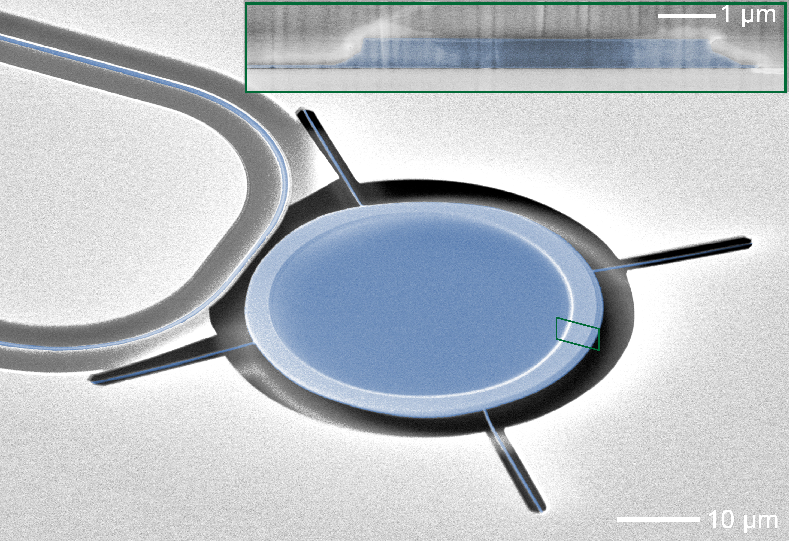
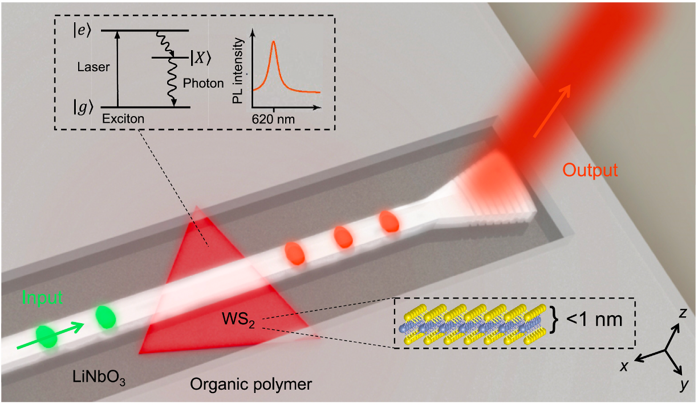
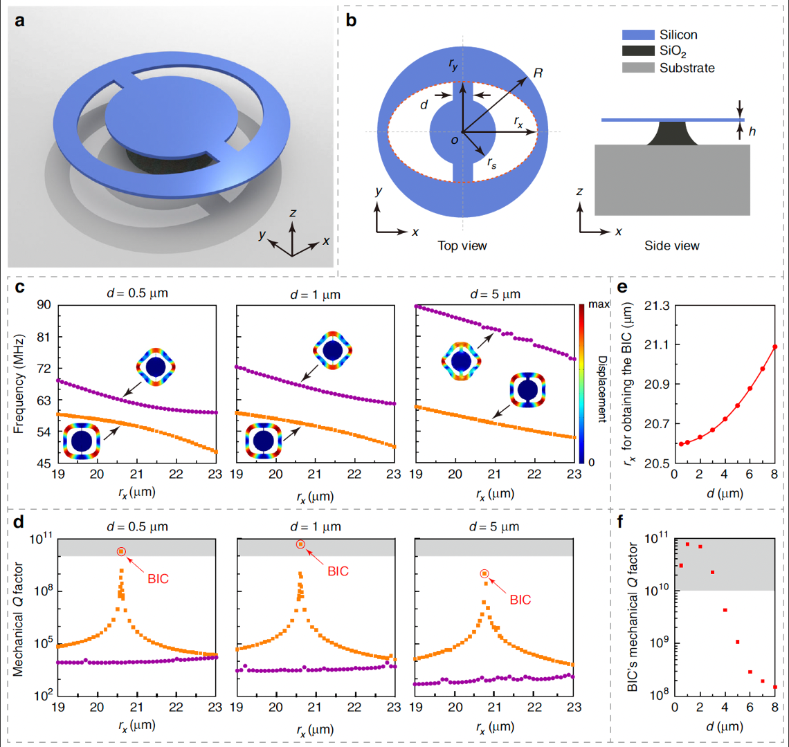
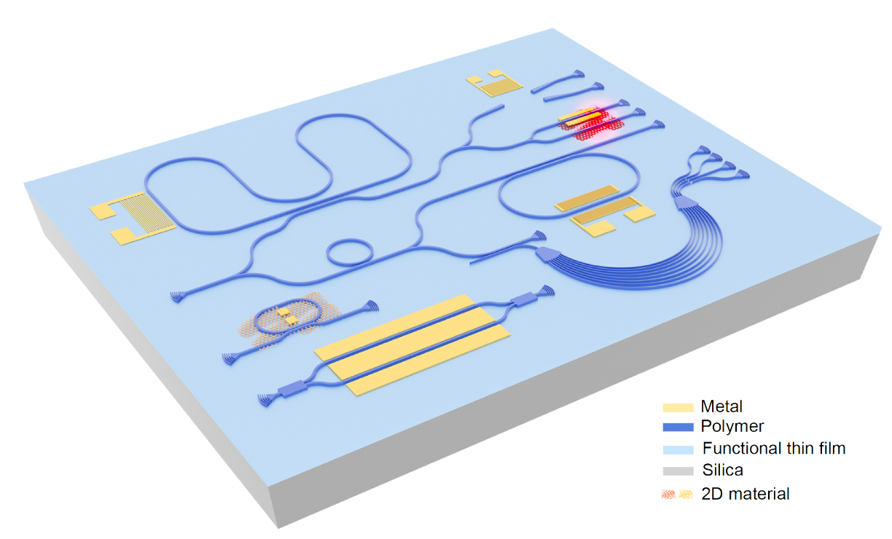

Etchless integrated photonics
Using bound states in the continuum to confine and guide light with low-index waveguides—without etching the single-crystal substrate.
Integrated photonics · quantum transduction
尽人事，知天命
I make photons and phonons do useful things on a chip.

01 OPTOMECHANICAL THERMAL SENSORS
02 PHOTON EMITTER · BIC WAVEGUIDE
03 MECHANICAL FW-BIC
04 ETCHLESS INTEGRATED PHOTONICS01 / 04
SCROLL TO EXPLORE ↓
01 / WHO I AM
I am a postdoctoral researcher at the University of California, Berkeley, working with Prof. Mengjie Yu.
My research spans the design, fabrication, and characterization of high-performance micro- and nanodevices across lithium niobate, silicon, and silicon nitride photonic platforms.
02 / WHAT I EXPLORE
Using bound states in the continuum to confine and guide light with low-index waveguides—without etching the single-crystal substrate.
Engineering robust optomechanical resonators that suppress mechanical dissipation and remain tolerant to fabrication variations.
Leveraging the piezoelectric and nonlinear properties of lithium niobate for optomechanical coupling, microwave-to-optical transduction, and quantum interfaces.
03 / SELECTED WORK
04 / OFF THE CLOCK
A few things beyond the lab. Click any card to add or revise your own fact.